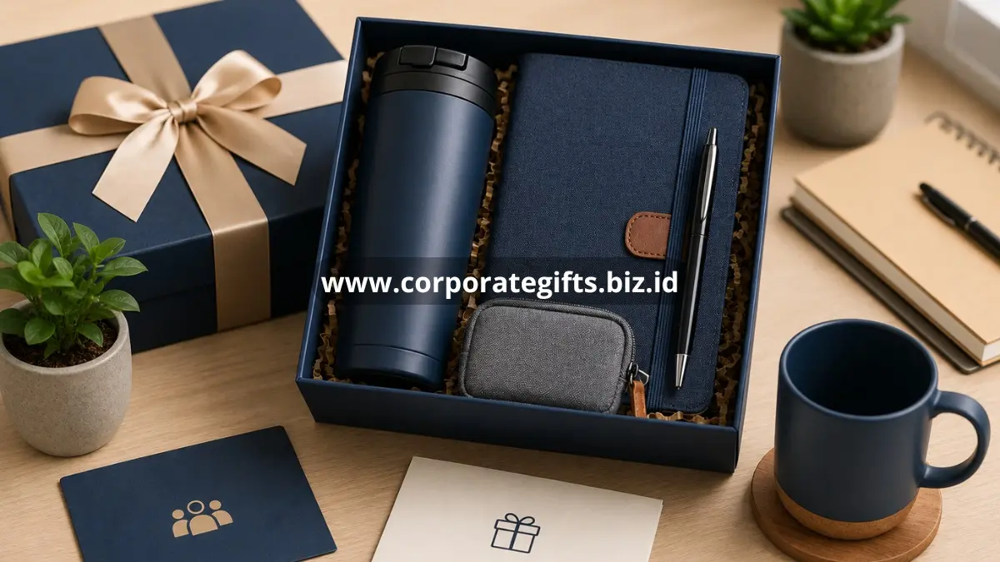

Poin Penting:
- Corporate gifts untuk karyawan berperan penting dalam mendukung motivasi dan retensi karyawan.
- Pemilihan hadiah sebaiknya mempertimbangkan kepraktisan dan relevansi dengan kebutuhan sehari-hari karyawan.
- Momen pemberian hadiah dapat disesuaikan dengan pencapaian individu maupun perusahaan secara keseluruhan.
- Variasi ide hadiah membantu program apresiasi terasa lebih personal dan tidak monoton.
Corporate gifts untuk karyawan adalah hadiah yang diberikan perusahaan sebagai bentuk apresiasi atas kontribusi dan pencapaian karyawan, sekaligus memperkuat motivasi serta rasa memiliki terhadap perusahaan.
Apa Manfaat Corporate Gifts bagi Karyawan dan Perusahaan?
Corporate gifts bagi karyawan bermanfaat untuk meningkatkan motivasi kerja, memperkuat rasa memiliki, serta mendukung budaya kerja yang positif di perusahaan.
Beberapa manfaat utama yang umum dirasakan meliputi:
- Meningkatkan motivasi kerja. Apresiasi dalam bentuk hadiah dapat mendorong karyawan merasa dihargai atas kontribusinya.
- Memperkuat rasa memiliki terhadap perusahaan. Karyawan yang merasa diperhatikan cenderung memiliki keterikatan emosional yang lebih kuat dengan tempat kerjanya.
- Mendukung retensi karyawan. Program apresiasi yang konsisten dapat menjadi salah satu faktor pendukung karyawan bertahan lebih lama di perusahaan.
- Membangun budaya kerja yang positif. Pemberian hadiah pada momen tertentu dapat menciptakan suasana kerja yang lebih hangat dan kolaboratif.
- Meningkatkan citra perusahaan sebagai tempat kerja yang baik. Karyawan yang puas cenderung membagikan pengalaman positif tersebut, baik secara langsung maupun melalui media sosial.
Secara umum, program apresiasi karyawan yang konsisten dapat berkontribusi terhadap tingkat kepuasan kerja, meskipun besarnya dampak dapat bervariasi tergantung budaya organisasi masing-masing perusahaan.
Kapan Waktu yang Tepat Memberikan Corporate Gifts kepada Karyawan?
Waktu yang tepat untuk memberikan corporate gifts kepada karyawan umumnya disesuaikan dengan momen pencapaian individu maupun perusahaan.
Beberapa momen yang biasa dijadikan kesempatan pemberian hadiah karyawan:
- Ulang tahun kerja atau masa kerja tertentu, sebagai bentuk apresiasi atas loyalitas karyawan.
- Pencapaian target tim atau perusahaan, seperti keberhasilan proyek besar.
- Hari besar keagamaan atau perayaan akhir tahun perusahaan.
- Acara internal, seperti gathering tahunan, town hall, atau perayaan ulang tahun perusahaan.
- Momen pribadi karyawan yang relevan secara profesional, seperti kelahiran anak atau pernikahan.
Ide Corporate Gifts apa yang Cocok untuk Karyawan?
Ide corporate gifts yang cocok untuk karyawan umumnya berupa produk fungsional yang dapat digunakan dalam aktivitas kerja maupun sehari-hari.
Beberapa ide yang dapat dipertimbangkan:
- Perlengkapan kerja personal, seperti tumbler, notebook, atau tas laptop dengan desain menarik dan branding perusahaan yang tidak berlebihan.
- Paket wellness, seperti kombinasi produk kesehatan ringan atau voucher relaksasi, cocok untuk mendukung keseimbangan kerja dan kehidupan pribadi karyawan.
- Voucher atau merchandise pilihan, memberikan opsi kepada karyawan untuk memilih sendiri hadiah sesuai preferensi masing-masing.
- Paket hampers ringan, kombinasi makanan atau minuman untuk momen perayaan bersama tim.
- Produk edukasi atau pengembangan diri, seperti akses pelatihan singkat atau buku, cocok untuk mendukung pengembangan karier karyawan.

Pemilihan ide hadiah sebaiknya tetap mempertimbangkan keberagaman preferensi karyawan agar program apresiasi terasa inklusif bagi seluruh anggota tim.
Bagaimana Cara Menyesuaikan Corporate Gifts dengan Budaya Perusahaan?
Corporate gifts sebaiknya disesuaikan dengan nilai dan budaya kerja perusahaan agar pesan yang disampaikan konsisten dengan identitas organisasi.
Beberapa hal yang dapat diperhatikan:
- Sesuaikan desain dan warna hadiah dengan identitas visual perusahaan.
- Pertimbangkan nilai-nilai perusahaan, misalnya perusahaan dengan fokus keberlanjutan dapat memilih produk ramah lingkungan.
- Libatkan karyawan dalam proses pemilihan ide hadiah melalui survei sederhana untuk memastikan relevansi.
- Pastikan pesan pada kartu ucapan mencerminkan apresiasi yang tulus, bukan sekadar formalitas rutin.
Pembahasan mengenai kesalahan umum yang perlu dihindari dalam proses ini dapat dilihat pada artikel kesalahan umum memilih corporate gifts dan cara menghindarinya.
Bagaimana Cara Mengukur Efektivitas Program Corporate Gifts untuk Karyawan?
Efektivitas program corporate gifts untuk karyawan dapat diukur melalui tingkat partisipasi, umpan balik karyawan, dan perubahan pada indikator keterlibatan kerja.
Beberapa cara yang dapat digunakan untuk mengevaluasi program tersebut:
- Kumpulkan umpan balik langsung. Survei singkat setelah pemberian hadiah dapat membantu perusahaan memahami tingkat kepuasan karyawan terhadap program apresiasi yang dijalankan.
- Pantau tingkat partisipasi pada acara terkait. Jika hadiah diberikan dalam rangkaian acara internal, tingkat kehadiran karyawan dapat menjadi salah satu indikator ketertarikan terhadap program.
- Perhatikan indikator keterlibatan kerja secara umum. Perubahan pada tingkat kepuasan kerja atau retensi karyawan dalam periode tertentu dapat menjadi salah satu acuan, meskipun perlu dipertimbangkan bersama faktor lain yang turut memengaruhi.
- Bandingkan dengan periode sebelumnya. Membandingkan respons karyawan pada program tahun berjalan dengan tahun sebelumnya membantu perusahaan menilai apakah perubahan jenis atau cara pemberian hadiah memberikan dampak yang lebih baik.
- Libatkan tim HR dalam evaluasi berkala. Evaluasi yang dilakukan secara rutin membantu perusahaan menyesuaikan program apresiasi agar tetap relevan dengan kebutuhan karyawan dari waktu ke waktu.
Evaluasi yang konsisten memungkinkan perusahaan terus menyempurnakan program corporate gifts untuk karyawan agar dampaknya terhadap motivasi dan budaya kerja tetap optimal.
FAQ
Apa manfaat utama corporate gifts untuk karyawan?
Manfaat utamanya adalah meningkatkan motivasi kerja, memperkuat rasa memiliki terhadap
perusahaan, dan mendukung budaya kerja yang positif.
Apakah corporate gifts untuk karyawan harus berupa barang fisik?
Tidak selalu. Corporate gifts untuk karyawan dapat berupa barang fisik, voucher, maupun
akses pelatihan, tergantung kebijakan dan anggaran perusahaan.
Bagaimana cara memastikan hadiah karyawan terasa personal?
Hadiah dapat terasa lebih personal dengan melibatkan preferensi karyawan melalui survei
sederhana atau memberikan opsi pilihan hadiah.
Corporate gifts untuk karyawan bukan sekadar formalitas tahunan, melainkan investasi terhadap motivasi dan budaya kerja perusahaan. Dengan memilih ide hadiah yang relevan, menyesuaikan momen pemberian, serta melibatkan preferensi karyawan, program apresiasi dapat memberikan dampak positif yang lebih terasa bagi keseluruhan tim.